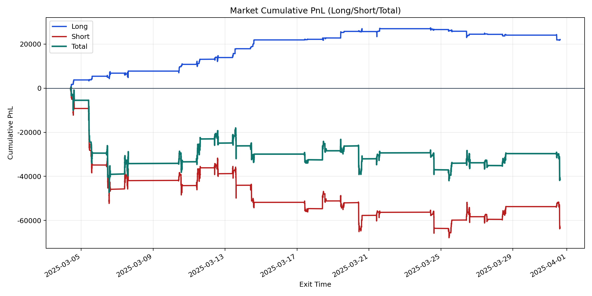
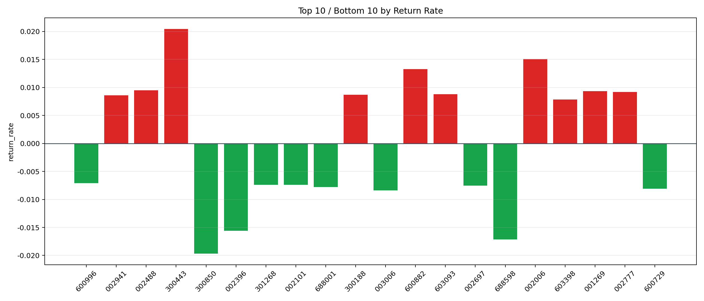

| repo_root | /home/haoranyou/data/output/alpha0.4_1w_5s_3ticks_index_filter/index_weights_1000 |
|---|---|
| period_months | 1 |
| period_label | 2025-03-04_to_2025-03-31 |
| start_time | 2025-03-04 09:50:17 |
| end_time | 2025-03-31 15:00:00 |
| n_trades | 23395 |
| n_symbols | 283 |
| total_pnl | -41367.856850000586 |
| long_total_pnl | 22004.899349999945 |
| short_total_pnl | -63372.756200000535 |
| total_entry_notional | 216455665.0 |
| long_entry_notional | 28858465.0 |
| short_entry_notional | 187597200.0 |
| total_return_rate | -0.00019111468785074572 |
| long_return_rate | 0.0007625110812373404 |
| short_return_rate | -0.00033781291085368295 |
| top_symbols_by_return | ["300443", "002006", "600882", "002488", "001269", "002777", "603093", "300188", "002941", "603398"] |
| bottom_symbols_by_return | ["300850", "688598", "002396", "003006", "600729", "688001", "002697", "301268", "002101", "600996"] |

